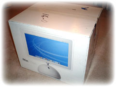

| ..*..*.. 2003年6月8日(日) 晴れ ..*..*.. 約2年前にiBookを買って、今でも使っていてお気に入りなんだけど、去年、17インチのPowerBook(ノートブック)が出てから、とても欲しくなりました。でも、値段も高いし、1年前に買ったばかりだし...と、迷っていました。 が、この前、ショップで実物を見て、iBookと違ってPowerBookにはいまいち愛着が持てないような気がしました。iBookのようにかわいくないし、キーボードも使いにくそう...そのとき、隣にあったiMacは逆にとても使いやすそうでした。 ...そして、とうとう買うことになりました。今度は夫と共同です。彼もずっと興味をもっていて、iMacを買うなら半分づつ出していっしょに使おうということになりました。 iMac G4 (17FP,1GHz, 512M) です。ふたつの目玉みたいのは、スピーカー。半透明で真っ白で、とてもきれいです。 iBook(G3 500MHz)に比べて早い早い。iPhoto(アルバム管理ソフト)やiTune(音楽管理ソフト)、Photoshop(画像処理ソフト)など、使い勝手は好きなんだけど、iBookではちょっと遅くて頻繁に使う気になれなかったものが、iMacでは早くて快適です。 iBookもそのまま使うので、今は、両方でうまく管理できるようにいろいろ考えています。それに、夫との時間割も必要だしね。いろいろ思いどおりにいかなくて、あれこれチェックしたりしながら使ってるんだけど、仕事と違って、いくら時間がかかってもいいものだから、楽しくて楽しくて。まだ、やろうとしていることのリストがたくさんあります。 ちなみに私たちは、それぞれのユーザーアカウントを作って、それぞれ好きなものを入れています。これだと相手の設定をつぶすこともなくて、快適マックライフです。 |